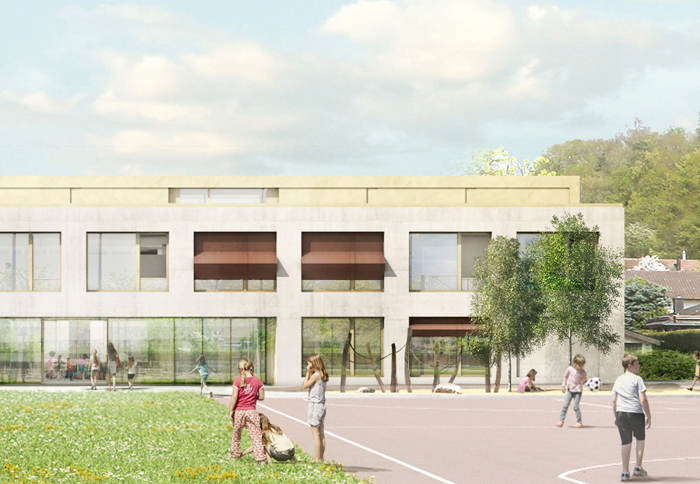

07.10.2016 ECOLE DE WÜRENLINGEN, 2ème rang
NYX architectes GmbH obtient le 2ème rang lors du mandat d’étude parallèle sur préqualification organisé par la commune de Würenlingen (AG).
NYX architectes GmbH obtient le 2ème rang lors du mandat d’étude parallèle sur préqualification organisé par la commune de Würenlingen (AG).